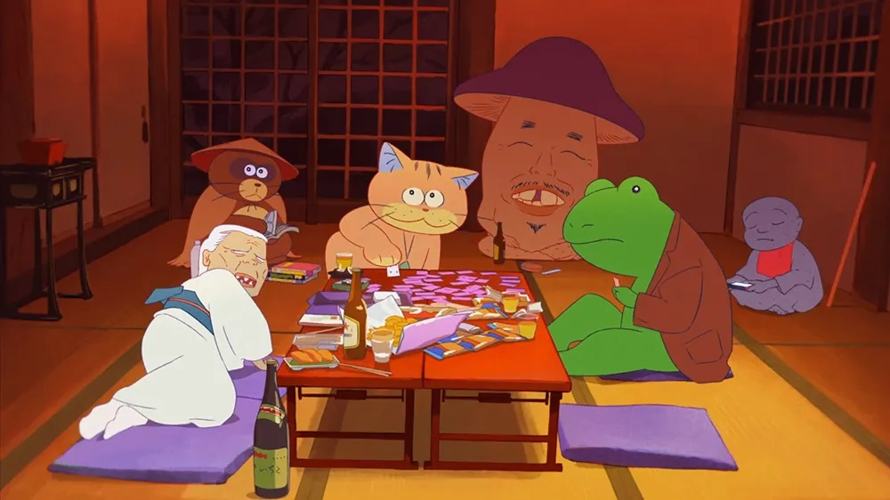

Up to the point the lights dimmed to begin a screening of "Ghost Cat Anzu," I realized I didn't know much about it. I knew it was a Japan-French co-production, which some news outlets highlighted for being unusual. I knew there was a large, Totoro-like orange cat, and a young girl. Fine, I assumed this was a slice-of-life children's film, we've gotten a lot of those in anime before. I didn't realize how much of an absurd comedy the movie was, which the rowdy packed crowd at Fantasia Film Festival absolutely loved, roaring with laughter several times over.The story centers around Karin, a pre-teen girl visiting a modest Japanese temple with her single father. The father is a deadbeat owing money to violent loan-sharks, so he leaves Karin in the safety of his own father, who runs the temple (and tries to ask for money before the grandfather kicks him out). Even though he promises to come back soon after negotiating the debt, Karin suspects she's been abandoned, and tries to get by in her new home while dealing with this emotional trauma. That's not to say she's completely helpless: she's a good actor, and frequently plays up her situation to garner sympathy and benefits from those around her. Basically, neither the daughter or father is of high moral character. But imagine Karin's shock to see a large orange cat arrive to the temple on a scooter - "oh, that's Anzu, our pet cat, he helps around with chores," says the grandfather. A man-sized cat that speaks English (or rather, Japanese, whatever language you watch the film in), and runs errands across town. And no one seems to think that's strange. Anzu becomes Karin's fill-in caretaker, and neither get along well with each other, but Karin slowly gets to meet the other unusual deities Anzu hangs out with. In the final act, this leads to Karin asking if there's a way to meet her dead mother, resulting in an exciting adventure and high-stakes chase through the Underworld. That last act comes out of nowhere, in what is otherwise a slow slice-of-life comedy. It's exciting, but highlights the odd sense of pacing with the film. The true "consequences" of the whole ordeal are briefly hinted at, but not fully explained, allowing Karin to yet again ignore the trouble she's caused. Karin really is a brat, but a likable one for her savvy way of navigating the world, even though the film isn't honest by letting her get away with it.  It's the original slice-of-life genre that surprised me. Anzu, the other ghost deities, and the human inhabitants of the small middle-of-nowhere town are all exaggerated and goofy. Anzu himself has the personality of a lazy middle-aged adult, making Dad-joke level puns, farting in people's faces, and laughing things off with a "Nya-ha-ha!" It's a strange deadpan type of humour whose absurdity seems to speak directly to teenagers raised on Internet memes. It's worth watching this with a group, so you can appreciate the laugh-out-loud moments.The production is interesting. Taking place in Japan, there's no doubt that this is anime, but outlines are given soft pastel-like colours, more reminiscent of French-styles of animation. And news outlets also mention... this was rotoscoped!?! I guess movement is more lifelike at times, but it's still very limited and never betrays the cartoonish character designs, so there was absolutely no sense to me that this used rotoscoping, which is high praise. This was co-directed by Yoko Kuno, with animation credits to "The Case of Hana and Alice" (also rotoscoped), continuing her unusual career of making anime that doesn't look like other anime. The other director is Nobuhiro Yamashita, with a long career in live-action film... these are strange bedfellows indeed for an animated feature. Having watched this in Japanese, the actors deserve credit for portraying... unusual... characters. Even in an overcrowded genre, "Ghost Cat Anzu" manages to be unique in apperance and its sense of humour. I had some issues with the story, and I can't say the visuals look outstandingly beautiful, but I admit this was a fun time.
- "Ani" More reviews can be found at : https://2danicritic.github.io/ Previous review: review_Genocidal_Organ Next review: review_Ghost_in_the_Shell